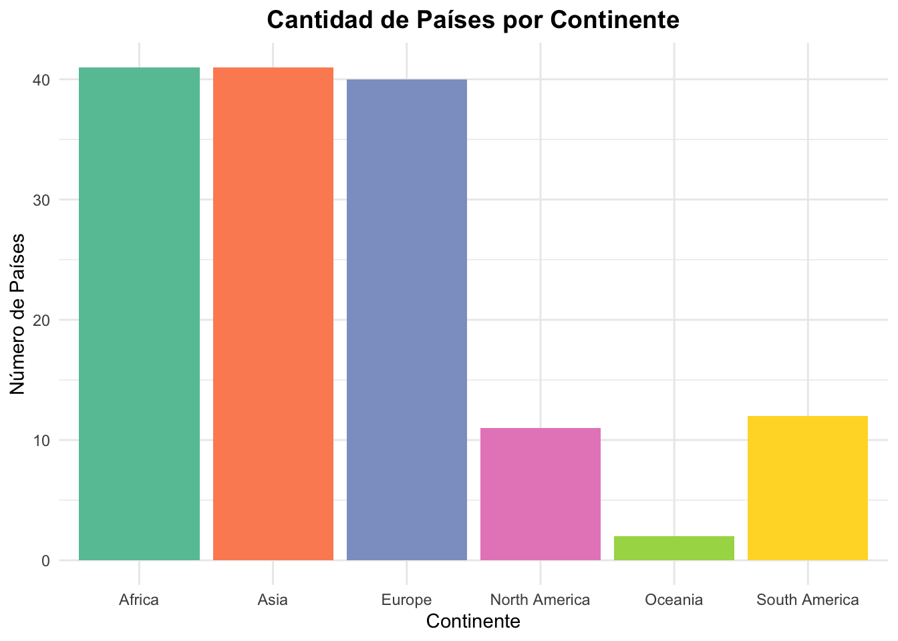
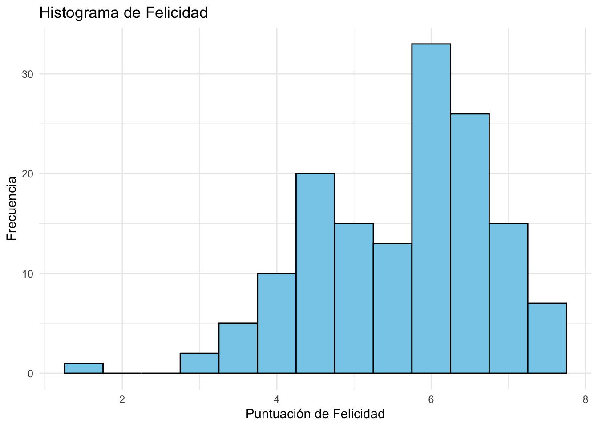
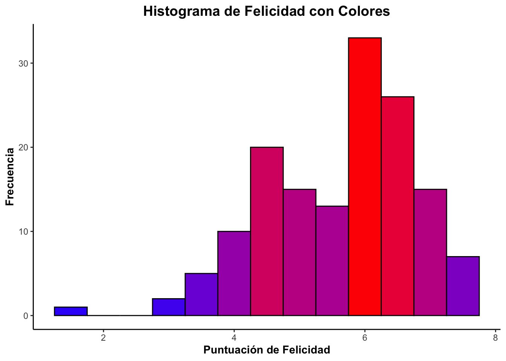

En estadística, una variable es cualquier característica, propiedad o atributo que puede tomar diferentes valores. Estos valores pueden ser numéricos o categóricos dependiendo del tipo de variable.
Son aquellas que expresan cualidades, atributos o categorías sin un valor numérico asociado.
Tipos de variables categóricas o cualitativas:
✅ Nominales: No tienen un orden específico.
Ejemplo: Color de ojos (azul, verde, marrón), estado civil (soltero, casado, divorciado).
✅ Ordinales: Poseen un orden lógico, pero la diferencia entre categorías no es cuantificable.
Ejemplo: Nivel de educación (básico, medio, superior), nivel de satisfacción (bajo, medio, alto).
Son aquellas que representan cantidades y pueden medirse numéricamente.
Tipos de variables numéricas o cuantitativas:
✅ Discretas: Toman valores enteros y no admiten valores intermedios.
Ejemplo: Número de hijos en una familia (0, 1, 2, 3, …), cantidad de autos en un estacionamiento. ✅ Continuas: Pueden tomar valores dentro de un rango infinito, incluyendo decimales.
Ejemplo: Peso de una persona (65.7 kg, 70.2 kg, etc.), temperatura de una ciudad (20.5°C, 23.1°C).
La base de datos “Felicidad” (World Happiness Report) contiene información sobre los niveles de felicidad en diferentes países, basada en diversas variables.
Analiza los tipos de variables que se encuentran en la base de datos “Felicidad”. Clasifícalas en cualitativas o cuantitativas y justifica tu respuesta.
Explora las variables
library(rio)
felicidad=import("felicidad.xlsx")library(rio)
felicidad=import("felicidad.xlsx")# Calcular la cantidad de países por continente
library(tidyverse)
conteo_continente <- felicidad %>%
group_by(Continente) %>%
summarise(Cantidad = n()) %>%
arrange(desc(Cantidad))# Calcular la cantidad de países por continente
library(tidyverse)## ── Attaching core tidyverse packages ──────────────────────── tidyverse 2.0.0 ──
## ✔ dplyr 1.1.4 ✔ readr 2.1.5
## ✔ forcats 1.0.0 ✔ stringr 1.5.1
## ✔ ggplot2 3.5.1 ✔ tibble 3.2.1
## ✔ lubridate 1.9.3 ✔ tidyr 1.3.1
## ✔ purrr 1.0.2
## ── Conflicts ────────────────────────────────────────── tidyverse_conflicts() ──
## ✖ dplyr::filter() masks stats::filter()
## ✖ dplyr::lag() masks stats::lag()
## ℹ Use the conflicted package (<http://conflicted.r-lib.org/>) to force all conflicts to become errorsconteo_continente <- felicidad %>%
group_by(Continente) %>%
summarise(Cantidad = n()) %>%
arrange(desc(Cantidad))
conteo_continente## # A tibble: 6 × 2
## Continente Cantidad
## <chr> <int>
## 1 Africa 41
## 2 Asia 41
## 3 Europe 40
## 4 South America 12
## 5 North America 11
## 6 Oceania 2library(ggplot2)
ggplot(conteo_continente, aes(x = Continente, y = Cantidad, fill = Continente)) +
geom_bar(stat = "identity", show.legend = FALSE) +
scale_fill_brewer(palette = "Set2") + # Colores atractivos
labs(title = "Cantidad de Países por Continente", x = "Continente", y = "Número de Países") +
theme_minimal() +
theme(plot.title = element_text(hjust=0.5, face="bold", size=14))library(ggplot2)
ggplot(conteo_continente, aes(x = Continente, y = Cantidad, fill = Continente)) +
geom_bar(stat = "identity", show.legend = FALSE) +
scale_fill_brewer(palette = "Set2") + # Colores atractivos
labs(title = "Cantidad de Países por Continente", x = "Continente", y = "Número de Países") +
theme_minimal() +
theme(plot.title = element_text(hjust=0.5, face="bold", size=14))
summary(felicidad$Indice_de_felicidad)summary(felicidad$Indice_de_felicidad)## Min. 1st Qu. Median Mean 3rd Qu. Max.
## 1.364 4.702 5.868 5.578 6.479 7.736library(ggplot2)
ggplot(felicidad, aes(x=Indice_de_felicidad)) +
geom_histogram(binwidth=0.5, fill="skyblue", color="black") +
labs(title="Histograma de Felicidad", x="Puntuación de Felicidad", y="Frecuencia") +
theme_minimal()library(ggplot2)
ggplot(felicidad, aes(x=Indice_de_felicidad)) +
geom_histogram(binwidth=0.5, fill="skyblue", color="black") +
labs(title="Histograma de Felicidad", x="Puntuación de Felicidad", y="Frecuencia") +
theme_minimal()
library(ggplot2)
ggplot(felicidad, aes(x=Indice_de_felicidad, fill=..count..)) +
geom_histogram(binwidth=0.5, color="black") +
scale_fill_gradient(low="blue", high="red") +
labs(title="Histograma de Felicidad con Colores", x="Puntuación de Felicidad", y="Frecuencia") +
theme_classic() +
theme(plot.title = element_text(hjust = 0.5, face="bold", size=14),
axis.title = element_text(face="bold"),
legend.position = "none") # Ocultar leyenda para estéticaggplot(felicidad, aes(x=Indice_de_felicidad, fill=..count..)) +
geom_histogram(binwidth=0.5, color="black") +
scale_fill_gradient(low="blue", high="red") +
labs(title="Histograma de Felicidad con Colores", x="Puntuación de Felicidad", y="Frecuencia") +
theme_classic() +
theme(plot.title = element_text(hjust = 0.5, face="bold", size=14),
axis.title = element_text(face="bold"),
legend.position = "none") # Ocultar leyenda para estética## Warning: The dot-dot notation (`..count..`) was deprecated in ggplot2 3.4.0.
## ℹ Please use `after_stat(count)` instead.
## This warning is displayed once every 8 hours.
## Call `lifecycle::last_lifecycle_warnings()` to see where this warning was
## generated.
Crea una variable ordinal a partir de su puntaje de felicidad.
felicidad <- felicidad %>%
mutate(Grados_felicidad = cut(Indice_de_felicidad,
breaks = c(1, 3, 5, 7, 10), # Definir los cortes
labels = c("Bajo", "Medio-Bajo", "Medio-Alto", "Alto"),
ordered_result = TRUE)) # Variable ordinalfelicidad <- felicidad %>%
mutate(Grados_felicidad = cut(Indice_de_felicidad,
breaks = c(1, 3, 5, 7, 10), # Definir los cortes
labels = c("Bajo", "Medio-Bajo", "Medio-Alto", "Alto"),
ordered_result = TRUE)) # Variable ordinal# Crear una tabla de frecuencia
tabla_frecuencia <- felicidad %>%
count(Grados_felicidad) %>%
mutate(Porcentaje = round(n / sum(n) * 100, 1))
tabla_frecuencia# Crear una tabla de frecuencia
tabla_frecuencia <- felicidad %>%
count(Grados_felicidad) %>%
mutate(Porcentaje = round(n / sum(n) * 100, 1))
tabla_frecuencia## Grados_felicidad n Porcentaje
## 1 Bajo 2 1.4
## 2 Medio-Bajo 45 30.6
## 3 Medio-Alto 91 61.9
## 4 Alto 9 6.1Elegir una variable categórica y otra numérica (la numérica puede ser una escala likert de 1 a 7) del Barómetro de las Américas 2023. Recuerda revisar el cuestionario.
https://www.vanderbilt.edu/lapop/peru.php